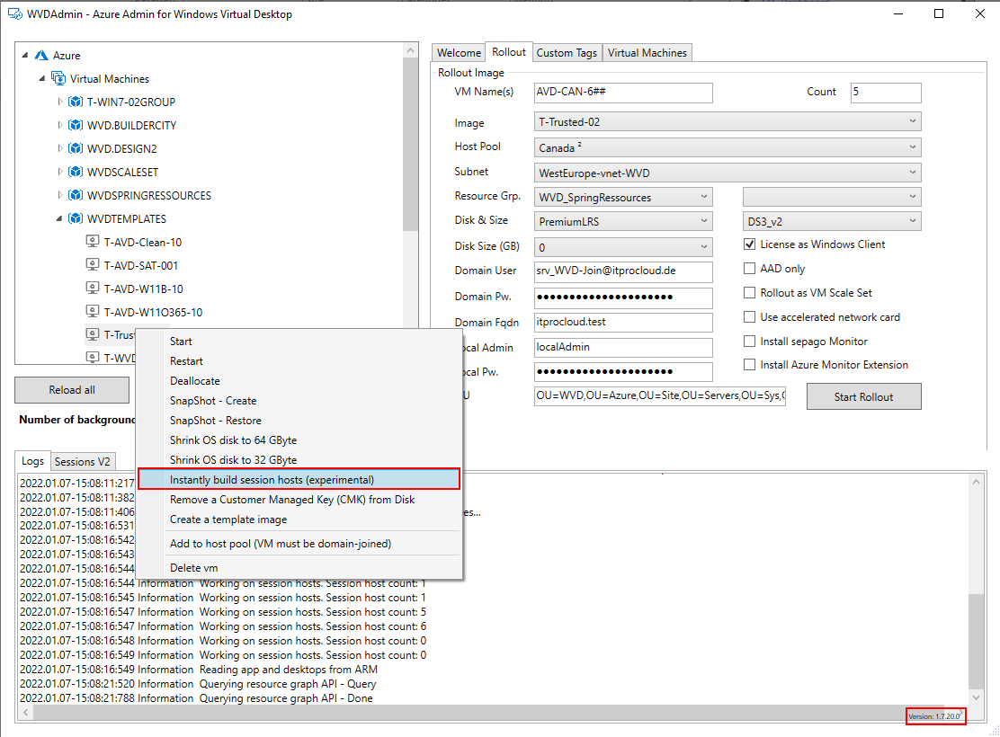
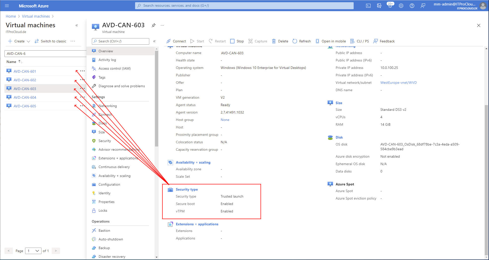
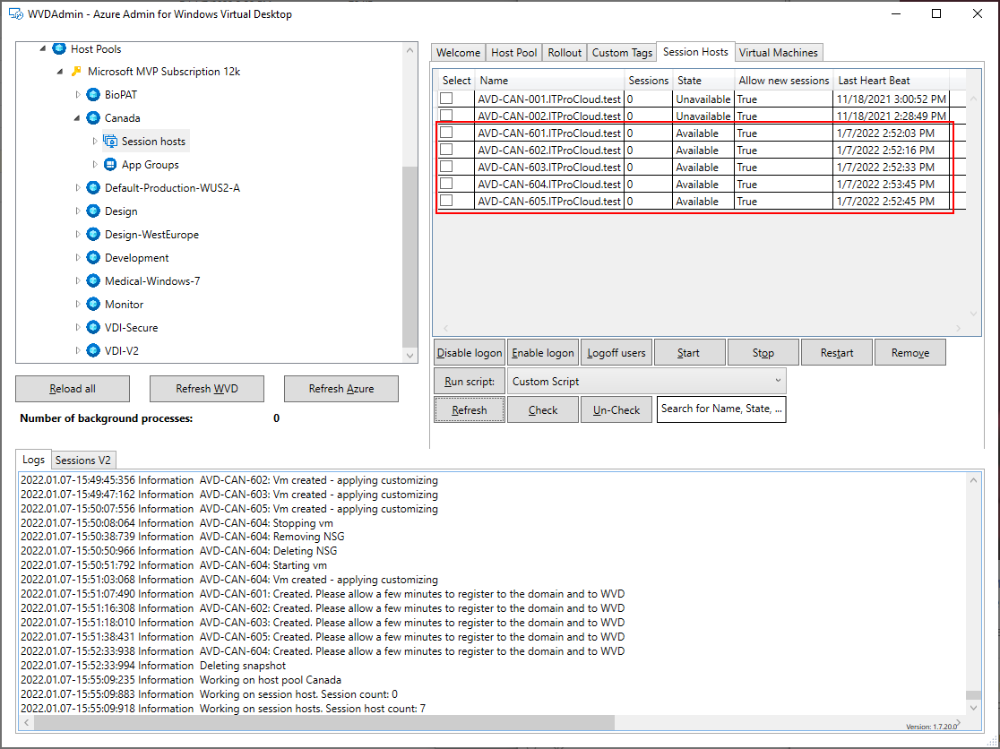

Azure Trusted Launch and Custom Images - even for AVD
Trusted launch for Azure virtual machines is currently in public preview (https://docs.microsoft.com/en-us/azure/virtual-machines/trusted-launch). The trusted launch has some benefits, like:
- Securely deploy virtual machines with verified boot loaders, OS kernels, and drivers.
- Securely protect keys, certificates, and secrets in virtual machines.
- Gain insights and confidence in the entire boot chain’s integrity.
- Ensure workloads are trusted and verifiable.
(Source: Microsoft website)
Technology-based, the trusted launch cannot be activated on existing VMs. Additionally, the VM size must support this feature. More importantly, a trusted launch VM can only be created from vanilla Microsoft Marketplace images. Deployment from a custom image is not working and is not supported.
Update 20/01/2022: A native and supported process to rollout VMs and session hosts based on a custom image is expected in Feburary 2022 and will be added to WVDAdmin and Hydra to show on Hydras’
Update 13/05/2022: You can enable “Secure Boot” for marketplace images and for Custom Images in an Azure Compute Gallery (configure the VM image definition to support Secure Boot before copying a captured image to the gallery definition). #WVDAdmin and #Hydra are supporting this new feature right now 
That’s not pretty, while in AVD, most deployments are based on images from Golden Masters. That is also the approach I’m using with my solutions (like WVDAdmin):
- Rolling out a Windows 10/11 VM
- Domain join the VM
- Update the VM and install applications
- Grabbing an image (with WVDAdmin, the Master survives)
- Rolling out session hosts based on the image
I spent some time finding a workaround for deploying session hosts based on a Golden Master with secure boot enabled. I was successful, and I built this as an experimental feature into WVDAdmin (v1.7.20).
How does it work:
-
Preparing the Golden Master
-
- Rolling out a Windows 10/11 VM from the marketplace and configuring the secure boot feature
- Domain join the VM
- Update the VM and install applications
- Shutdown the VM
-
Creating session hosts from the Master
-
- Navigate in WVDAdmin to the VM (Azure -> Virtual Machines -> Resource Group -> VM)
- Right-click the VM and select: “Instantly build session hosts (experimental)”
- Configure the settings for the deployment (VM size, host pool, etc.)
- Start the rollout
After a while, session hosts with secure boot enabled are part of the host pool. While the rollout process is more complex, it will take longer than the classic approach (the new approach is based on a snap-shot technology).



Note: This feature is very experimental, and I’m looking forward to a native and supported way to deploy secure boot hosts based on a custom image. Please use it at your own risk.
Note: If anybody finds an easier way - please let me know